- Módulo: Fundamentos de Hardware
- Título del trabajo Plantilla HTML entrega de trabajo
- Componentes del grupo: David Vargas
- Curso Académico: 2013/2014
- Fecha de entrega: 1 de Enero de 2014
Instalamos el iTal Master, para ello lo buscamos en synaptic e instalamos los paquetes necesarios:
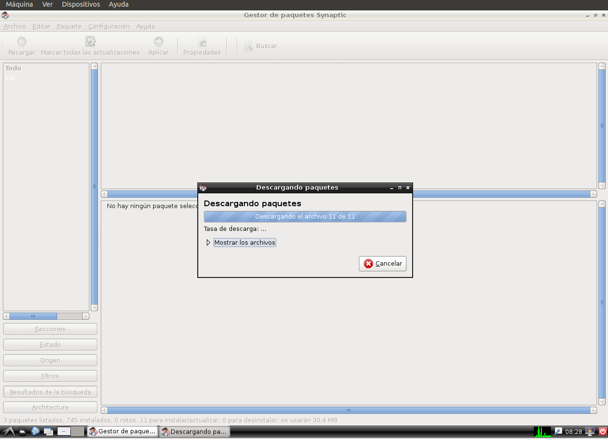
Al no estar generadas las claves (Publica y privada), las generamos manualmente:
con el comando "ica -createkeypair"
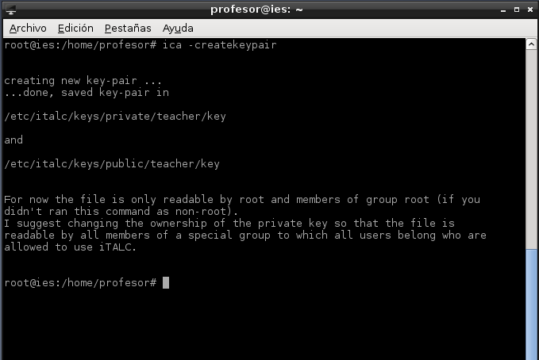
Creamos nuestro grupo de usuario y añadimos nuestro usuario con los comandos mostrados en la imagen:
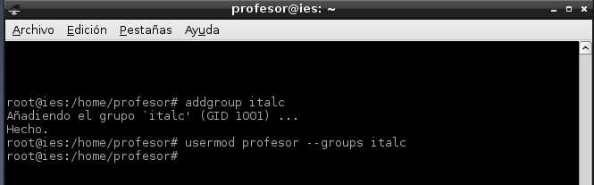
damos permisos al grupo italc, para tener acceso a las claves de italc con los comandos mostrados en la imagen:
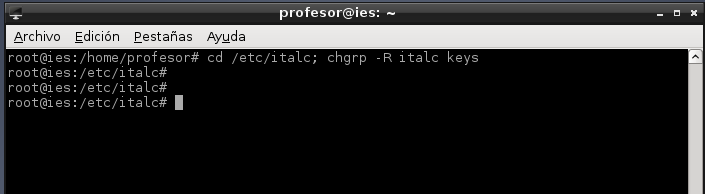
Verificamos que el servicio está iniciado con los comandos mostrados en la imagen:
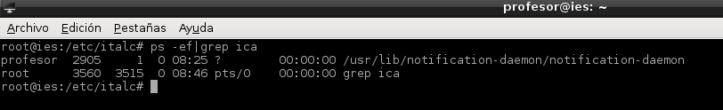
Para que el servicio se inicie automaticamente editamos el siguiente archivo "/home/alumno/.profile" y añadimos
"/usr/bin/ica &" al final del fichero.
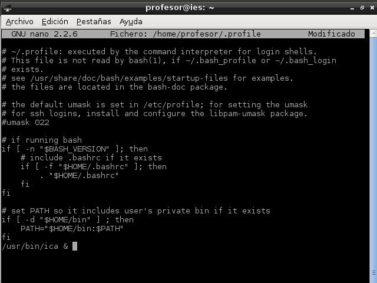
Instalamos el cliente de italc, en el equipo exclavo, con el siguiente comando: apt-get install italc-client
y lo configuramos como el maestro:
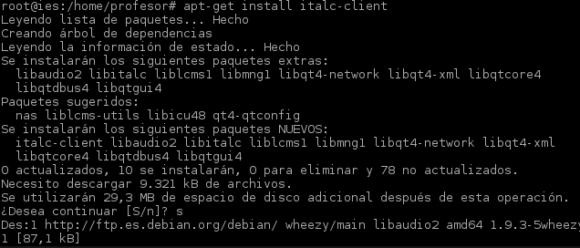
Iniciamos en el Slave y en el Master el italc en la terminal, con el comando:/usr/bin/ica &
En el Master vamos a el administrador de clases -> clic derecho -> añadir ordenador
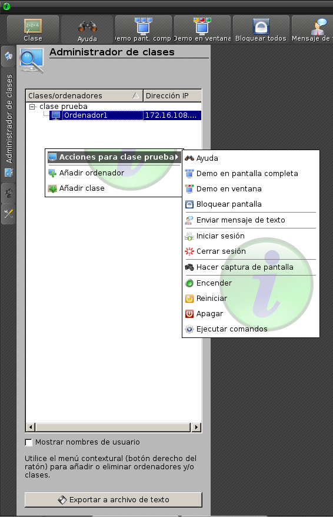
Rellenamos los siguientes campos, rellenando lo que se nos pide
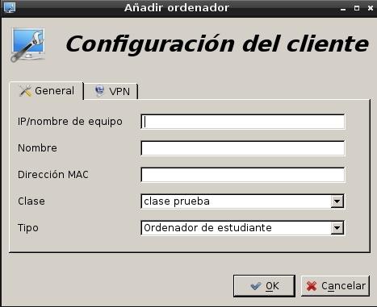
Una vez añadido, al final, vemos que funciona
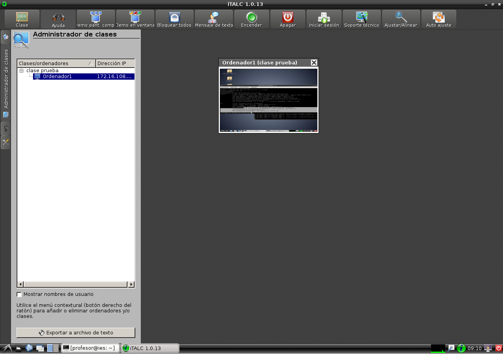
Miramos la versión del master, y vemos que sea igual que la del Slave, para que funcione.
En nuestro caso la 1.0.9. Nos la bajamos de aquí: http://sourceforge.net/projects/italc/files/italc/
Nos vamos a la carpeta de descargas e iniciamos el instalador
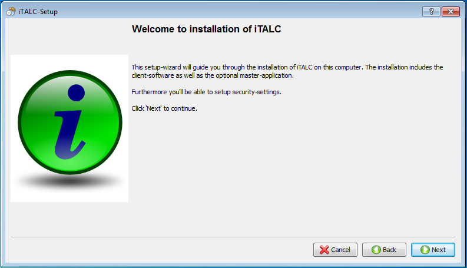
Aceptamos la licencia 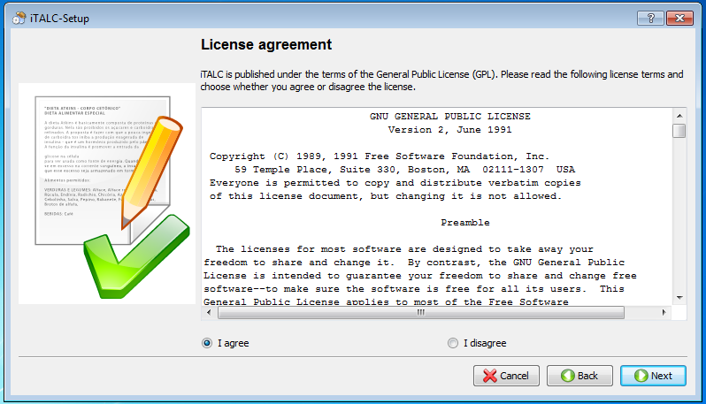
Elejimos donde se va a realizar la instalación 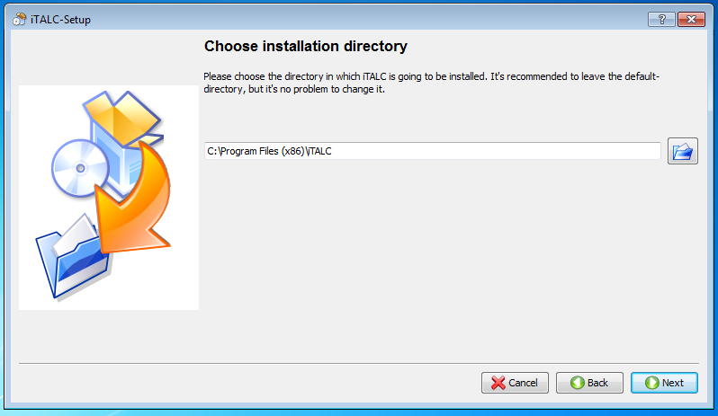
Elejimos donde se va a realizar la instalación

Elejimos la instalación solo del cliente 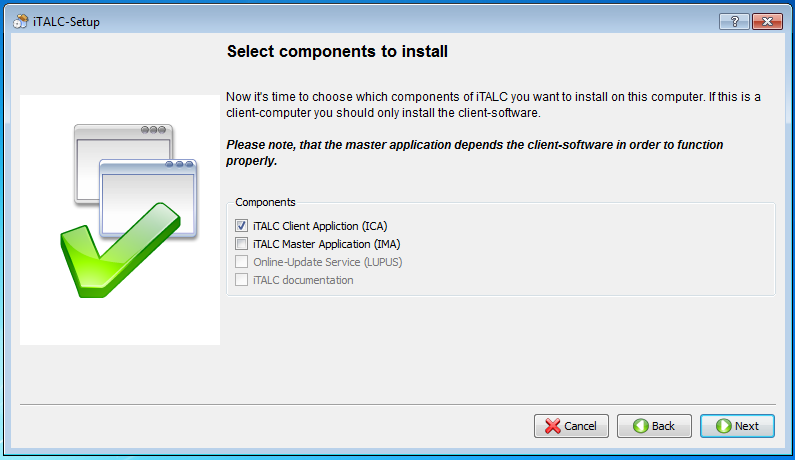
Le damos a siguiente y terminamos la instalación 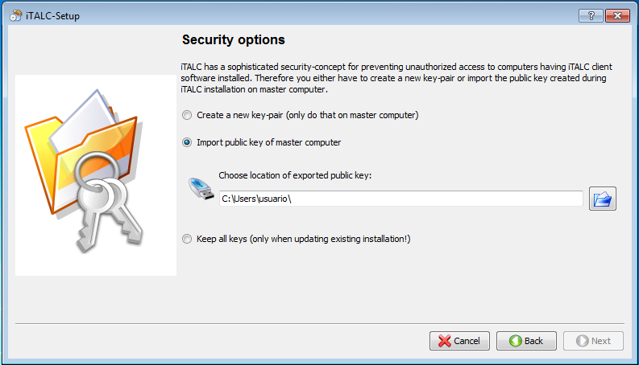
Copiamos la clavwe publica del master en el directorio donde se ha instalado en italc.
En la carpeta public
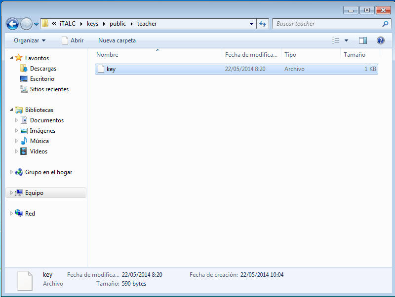
Detenemos el servicio en italc, y ejecutamos el programa ica.verificamos que funciona: 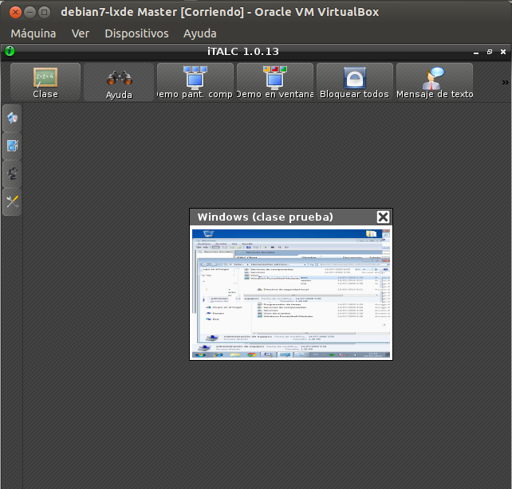